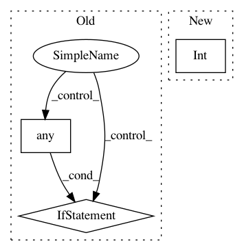

7d70b5e7dd1f5e33326cb50b339aa0b5c13073c4,skimage/segmentation/_join.py,,relabel_sequential,#Any#Any#,55
Before Change
return label_field, labels, labels
forward_map = np.zeros(int(m + 1), dtype=label_field.dtype)
forward_map[labels0] = new_labels0
if not (labels == 0).any():
labels = np.concatenate(([0], labels))
inverse_map = np.zeros(offset - 1 + len(labels), dtype=label_field.dtype)
inverse_map[(offset - 1):] = labels
relabeled = forward_map[label_field]
return relabeled, forward_map, inverse_map
After Change
new_labels0 = np.arange(offset, int(new_m + 1))
forward_map = np.zeros(int(m + 1), dtype=label_field.dtype)
forward_map[labels0] = new_labels0
inverse_map = np.zeros(int(new_m + 1), dtype=label_field.dtype)
inverse_map[offset:] = labels0
relabeled = forward_map[label_field]
return relabeled, forward_map, inverse_map
In pattern: SUPERPATTERN
Frequency: 3
Non-data size: 3
Instances
Project Name: scikit-image/scikit-image
Commit Name: 7d70b5e7dd1f5e33326cb50b339aa0b5c13073c4
Time: 2020-02-19
Author: mail@uweschmidt.org
File Name: skimage/segmentation/_join.py
Class Name:
Method Name: relabel_sequential
Project Name: scipy/scipy
Commit Name: f3c73058f769fde0679c377cdf5b3f6754628313
Time: 2013-05-01
Author: pav@iki.fi
File Name: scipy/stats/tests/test_fit.py
Class Name:
Method Name: check_cont_fit
Project Name: dgasmith/opt_einsum
Commit Name: 802a991087c8ba2620e2f98aa709af8f530f8b93
Time: 2018-03-22
Author: john.gray.14@ucl.ac.uk
File Name: opt_einsum/blas.py
Class Name:
Method Name: can_blas